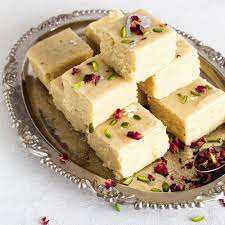

Gulab Jamun
Ingredients:
- Syrup
- Dough
- Oil
Recipe
Gulab jamun is traditionally fried in ghee, but you can also use oil. To fry the dough balls, you can:
- Heat the oil to medium hot.
- Gently place the dough balls in the oil.
- Rotate the dough balls often with a slotted spoon so they brown evenly.
- Remove the dough balls from the oil when they are golden brown and place them on a paper towel.
- After frying, you can soak the dough balls in the syrup for about four hours at room temperature. You can serve gulab jamun with crushed pistachios and saffron.
Milk Barfi
Ingredients:
- Cardamom Powder
- Sugar
- Milk
Recipe
Here are some tips for making milk barfi:
- Firstly, in a bowl take 2½ cup milk powder, ¾ cup sugar and 1 cup milk.Whisk and mix well until everything is well combined.
- Transfer the mixture into large kadai,recommend using nonstick pan to prevent from sticking.Also add ¼ cup ghee and mix well on low flame.
- Keep stirring on low flame until the mixture thickens.The mixture will hold the shape and starts to separate the pan after 10 minutes.Do not overcook, as the burfi will turn hard. and if the mixture is undercooked then it turns chewy.
- Transfer the burfi dough into the tray lined with baking paper.Press gently, making sure its leveled up.Top with few chopped pistachios and press gently.Cover and refrigerate for 1 hour or until it sets completely.
- After 1 hour, unmould the burfi and cut with sharp knife.Finally, milk burfi recipe tastes great for a week when stored in an airtight container.
